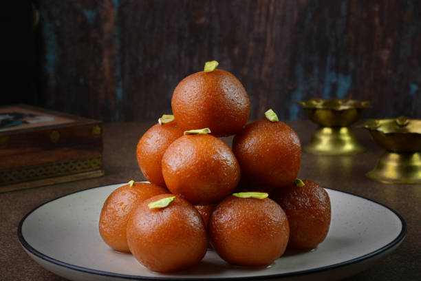
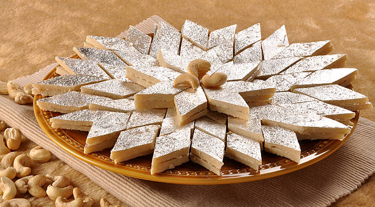

Gulab Jamun
Ingredients:
- Milk Powder (or Khoya)
- All-Purpose Flour (Maida)
- Baking Soda
- Ghee
- Milk
- Sugar
- Cardamom
- Water
Recipe:
- Prepare Dough - Mix milk powder, flour, baking soda, ghee, and milk to make a soft dough. Let it rest for 10 minutes.
- Make Sugar Syrup - Boil sugar and water until slightly sticky. Add cardamom for flavor. Keep it warm.
- Shape Balls - Roll small, smooth balls without cracks.
- Fry Gently - Deep fry on low-medium heat until golden brown.
- Soak & Enjoy - Put the hot jamuns in warm sugar syrup. Let them soak for 2-3 hours before serving.

Kaju Katli
Ingredients:
- Cashews (Kaju)
- Sugar
- Cardamom Powder
- Ghee
- Edible Silver Leaf (Varak)
- Water
Recipe:
- Grind Cashews - Grind cashews into a fine powder. Don't grind too much, or it will turn into a paste.
- Make Sugar Syrup - In a pan, add sugar and water. Heat until the syrup reaches one-thread consistency (you can test by taking a drop between your fingers; it should form a thread).
- Add Cashew Powder - Slowly add the cashew powder into the syrup, stirring constantly to avoid lumps. Keep stirring to make a smooth mixture.
- Cook the Mixture - Cook on low heat, stirring continuously, until the mixture thickens and starts to come together like dough.
- Add Ghee - Add a little ghee to make it smooth and shiny. Stir for a minute.
- Shape the Katli - Transfer the mixture onto a greased surface or parchment paper. Flatten it using a rolling pin into a thin sheet.
- Cut and Decorate - Once cooled slightly, cut the mixture into diamond or square shapes. Optionally, place edible silver leaf (varak) on top for decoration.
- Cool and Serve - Let the Kaju Katli cool completely before serving.
